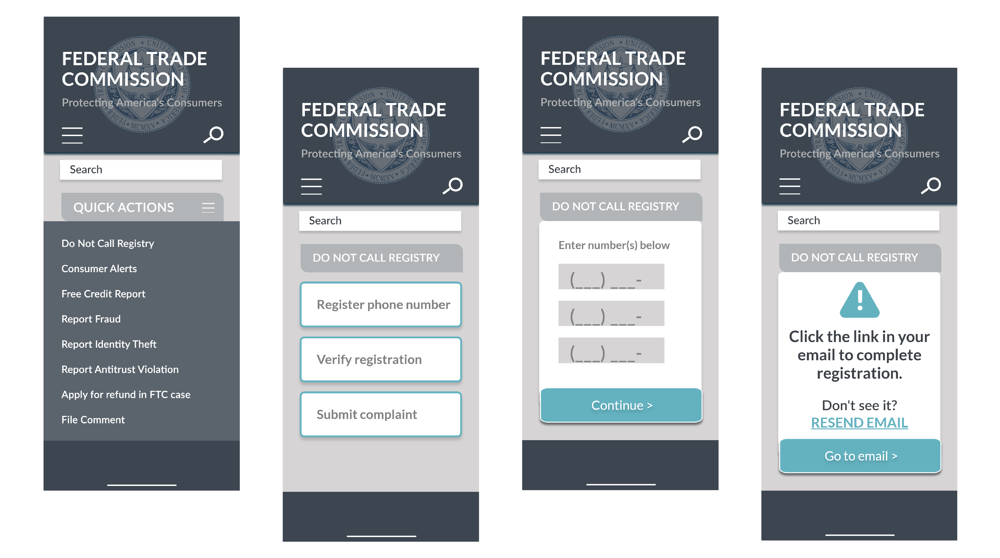
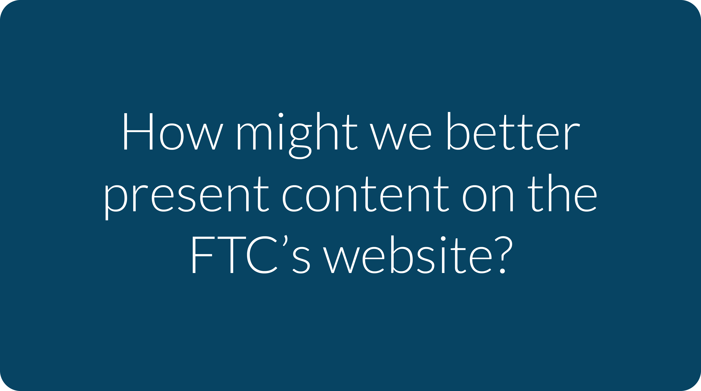
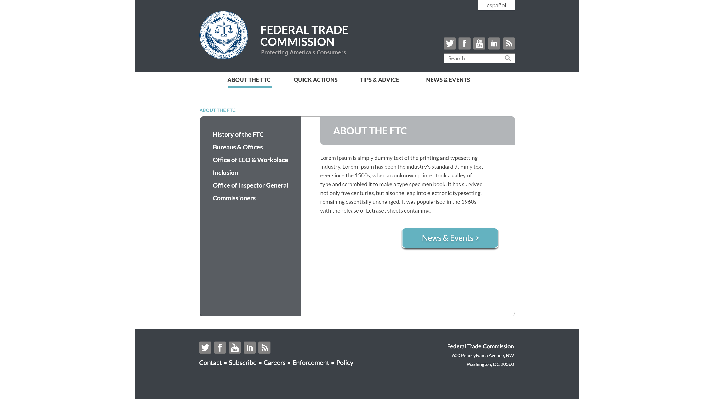
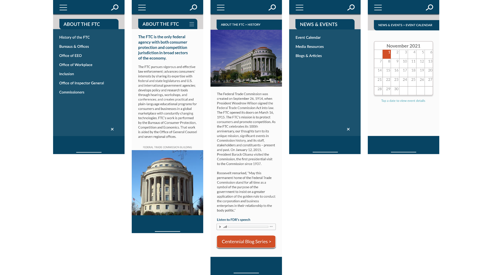
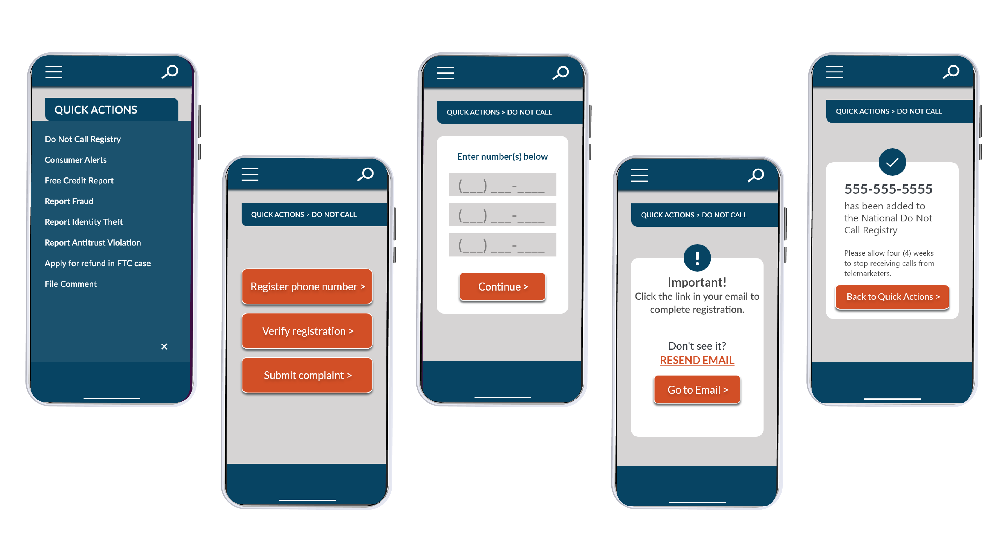

The U.S. Federal Trade Commission protects consumers against unfair practices in the marketplace. Actions on the site include reporting fraud and identity theft.
During initial testing, actions on the site were broken down into step by step processes with detailed instructions for clarity and ease of use.
Users found the FTC website informative but difficult to navigate, so the challenge was to simplify and consolidate each screen/webpage. We asked:
To simplify navigation, screens and pages were sorted and condensed into four categories, while less pertinent information was moved to the footer.
Based on user feedback, a sans-serif font was chosen to increase readability. Bold paragraph headings and vibrant buttons establish hierarchy.
Final user testing was a success with all users able to navigate the site and complete tasks including adding a number to the national do not call list.
